<div class="container matterandmaterials"><div id="contents" class="col-md-12 main-content"><span  class="ch-nr-3"/>
        <div  class="section"><h1 class="title" id="toc-id-0">Acids, bases and neutral substances</h1><div class="teachers-guide">
<p><strong>Chapter overview</strong></p>

<p>2 weeks</p>

<p>This is the first time learners are introduced to acids and bases. The approach is to start from the known and introduce the topic through learner's experiences with everyday acids and bases. We will also first look at how we experience acids and bases in foods. This links to Life and Living and the senses. We will then look at acids and bases in the laboratory and the basic properties of acids, bases and neutrals. They will look at acids and bases again in Gr. 9 in more detail, also covering the pH scale, and the reactions of acids and bases.</p>

<p/>

<p>3.1 Tastes of substances (1 hour)</p>

<p/>
<table><tr><td><p><strong>Tasks</strong></p></td><td><p><strong>Skills</strong></p></td><td><p><strong>Recommendation</strong></p></td></tr><tr><td><p>Activity: Have a look at your own tongue</p></td><td><p>Observing, comparing</p></td><td><p>Suggested</p></td></tr></table><p/>

<p>3.2 Properties of acids, base and neutrals (2 hours)</p>

<p/>
<table><tr><td><p><strong>Tasks</strong></p></td><td><p><strong>Skills</strong></p></td><td><p><strong>Recommendation</strong></p></td></tr><tr><td><p>Activity: True or false?</p></td><td><p>Accessing and recalling information</p></td><td><p>Suggested</p></td></tr><tr><td><p>Activity: Acids and bases in our homes</p></td><td><p>Accessing and recalling information, observing, comparing, sorting and classifying</p></td><td><p>CAPS suggested</p></td></tr></table><p/>

<p>3.3 Acid-base indicators (3 hours)</p>

<p/>
<table><tr><td><p><strong>Tasks</strong></p></td><td><p><strong>Skills</strong></p></td><td><p><strong>Recommendation</strong></p></td></tr><tr><td><p>Activity: Preparing and testing red cabbage juice with acid and base</p></td><td><p>Following instructions, practical skills, observing, comparing</p></td><td><p>Suggested</p></td></tr><tr><td><p>Activity: Making red cabbage indicator paper</p></td><td><p>Following instructions, practical skills</p></td><td><p>Optional</p></td></tr><tr><td><p>Investigation: How does litmus respond to acids and bases?</p></td><td><p>Hypothesising, doing investigation, recording information, comparing, interpreting information</p></td><td><p>CAPS suggested</p></td></tr><tr><td><p>Investigation: Is red cabbage paper suitable as acid-base indicator?</p></td><td><p>Doing investigation, recording information, interpreting information</p></td><td><p>Optional</p></td></tr></table><p/>
</div>
<p/>
<div class="note  col-md-10" data-type="keyquestions"><ul data-class="ListBulleted"><li>Which tastes can we sense with our tongues?</li>
<li>How does our sense of taste ensure our survival?</li>
<li>What are the unique properties of:
<ul data-class="ListBulleted"><li>acids;</li>
<li>bases; </li>
<li>neutral substances?</li>
</ul></li>
<li>Which household substances are (or contain):
<ul data-class="ListBulleted"><li>acids;</li>
<li>bases;</li>
<li>neutral substances?</li>
</ul></li>
<li>How can we tell if something is an acid, a base or a neutral substance?</li>
</ul></div>
<p/>

<p>What do you know about acids? Would you touch an acid? Have you ever tasted an acid? Do you think it is possible to taste an acid without burning your tongue? What do you think it would feel like when an acid burned your tongue?</p>

<p/>

<p>Before we talk more about acids, let us first examine the human tongue. It is a most fascinating organ, and plays an important role in our sense of taste.</p>
<div class="section"><h2 class="title" id="toc-id-1">Tastes of substances</h2>
<p/>
<div class="note  col-md-6" data-type="newwords"><ul data-class="ListBulleted"><li>flavour</li>
<li>sense</li>
<li>taste buds</li>
<li>chemoreceptor</li>
<li>savoury</li>
<li>instinct</li>
<li>tongue map</li>
</ul></div>
<p/>

<p>What is your favourite food? What do you like most about your favourite food? You will probably say that you just LOVE the taste of it! The taste of our favourite foods make us feel good. How do we taste our food?</p>

<p/>
<figure>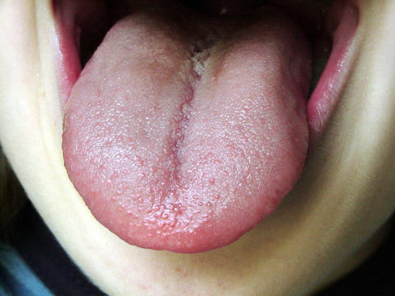<figcaption class="caption">We taste food with tiny structures on our tongues!</figcaption></figure><p/>

<p>Look in the mirror, and stick out your tongue. Look for small, round bumps. These are called <strong>papillae</strong>. Most of them contain <strong>taste buds</strong>. The taste buds are very small structures which have sensitive hairs. The chemicals in the food that you eat dissolve into your saliva in solution. The chemicals then stimulate the tiny hairs within the tastebuds and turn these signals into impulses. These impulses travel to the brain allowing us to experience the sensation of taste.</p>

<p/>
<div class="note  col-md-6" data-type="didyouknow">
<p>Insects have the most highly developed sense of taste. They have taste organs on their feet, antennae, and mouthparts.</p>
</div>
<p/>
<div class="teachers-guide">
<p>Learners will study the nervous system in more detail in Gr. 9 Life and Living, as well as in Life Sciences if they carry on with the subject in Gr. 10. For now, this is just interesting information about how we taste foods and distinguish between different tastes.</p>
</div>
<p/>
<div class="note  col-md-6" data-type="didyouknow">
<p>We have more than 10 000 taste buds in our mouth. You even have taste buds on the roof of your mouth.</p>
</div>
<p/>
<div class="activity" data-type="Activity"><h1 class="title">Have a look at your own tongue</h1>
<p/>
<div class="teachers-guide">
<p>As a homework exercise, learners can do the following activity. Otherwise, if you have some mirrors available in the classroom, learners can have a look at their tongues. If you do this in class, try bringing some lemons to class for learners to taste and then describe their experiences.</p>
</div>
<p/>

<p><strong>MATERIALS:</strong></p>
<ul data-class="ListBulleted"><li>mirror</li>
<li>pencil</li>
<li>sugar water</li>
<li>lemon juice</li>
</ul><p/>

<p><strong>INSTRUCTIONS:</strong></p>
<ol data-class="ListEnumerated"><li>Look in the mirror at your tongue.</li>
<li>Stick it out as far you can and try to see the papillae. Are they larger in some areas?</li>
</ol><p/>
<figure>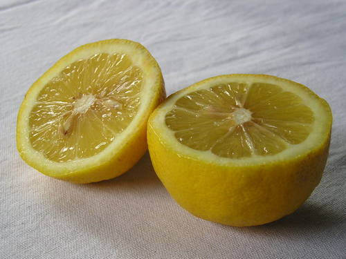<figcaption class="caption">Have you tasted a lemon before?</figcaption></figure><p/>

<p>Close your eyes and imagine biting into a slice of lemon. Can you describe the experience? What does the lemon taste like? Sweet, sour, salty or bitter? </p><hr/><div class="teachers-guide">
<p>Sour</p>
</div>
<p/>

<p>If you have sugar solution and lemon juice available in the class, taste these different substances. See if you can identify <em>where</em> on your tongue you taste the two different tastes.</p>

<p/>
</div>

<p/>
<div class="section"><h3 class="title" id="toc-id-2">Your tongue can only sense four flavours</h3>
<p/>

<p>You can only sense four different tastes with your tongue. Can you name them? </p><hr/><div class="teachers-guide">
<p>Sweet, sour, bitter and salt.</p>
</div>
<p/>
<figure>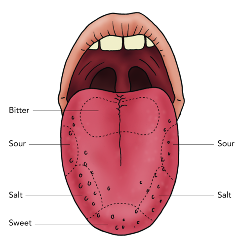<figcaption class="caption">The tongue map.</figcaption></figure><p/>

<p>The four main tastes that are most common, are sweet, sour, salt and bitter. These tastes combine to make up the different flavours of our foods.</p>

<p/>
<div class="note  col-md-6" data-type="takenote">
<p>A flavour is a combination of tastes and smells.</p>
</div>
<p/>
<figure>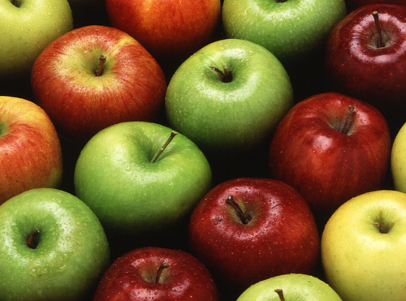<figcaption class="caption">How would you classify the taste of apples? Sweet or sour? Bitter? Perhaps a combination?</figcaption></figure><figure><figcaption class="caption">Many people really enjoy the sour-salty taste of salt and vinegar chips!</figcaption></figure><p/>

<p>There is a good reason for why we like certain tastes, but not others.</p>

<p/></div><div class="section"><h3 class="title" id="toc-id-3">Our sense of taste protects us</h3>
<p/>

<p>Just as we like and seek out foods that taste good, our bodies have also been programmed to avoid food with strong bitter or sour tastes. This helps to protect us against poisons, which often have a strong bitter taste. 'Bitter' is also the basic taste that our tongues are most sensitive to. Spoiled food often tastes sour and it may also have a bad smell. Our instinct will be to avoid it, which will protect us from becoming ill from ingesting the organisms that have spoiled the food.</p>

<p/>
<div class="note  col-md-6" data-type="didyouknow">
<p>Almond nuts can be sweet or bitter, depending on the type of tree they come from. The sweet almonds (which we eat) do not contain poisonous chemicals. Bitter almonds from another tree species contain chemicals which are toxic to humans.</p>
</div><figure><figcaption class="caption">Sweet almonds, such as these, are edible as they do not contain toxic chemicals, unlike the wild bitter almonds.</figcaption></figure><figure>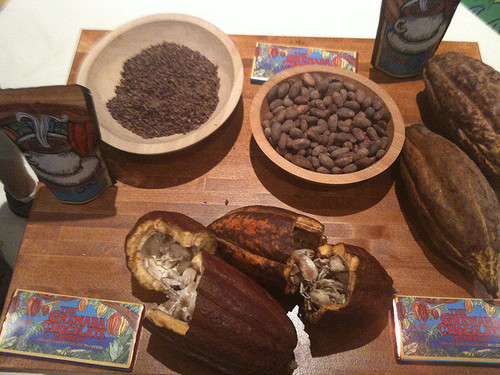<figcaption class="caption">Cocoa beans come from cocoa pods. Chocolate is made from cocoa, but cocoa is very bitter. Lots of sugar is added to chocolate to make it sweet. <a href="http://www.flickr.com/photos/michaelsgalpert/3681442211/in/photostream/"> http://www.flickr.com/photos/michaelsgalpert/3681442211/in/photostream/ </a></figcaption></figure><p/>

<p>Soon the link between the tongue and chemical substances will become clear.</p>

<p/></div></div><div class="section"><h2 class="title" id="toc-id-4">Properties of acids, bases and neutral substances</h2>
<p/>
<div class="note  col-md-6" data-type="newwords"><ul data-class="ListBulleted"><li>corrosive</li>
<li>acid</li>
<li>chemical formula</li>
<li>essential</li>
<li>immune system</li>
</ul></div>
<p/>
<div class="note  col-md-6" data-type="takenote">
<p>When we want to say something has the properties of an acid, we use the adjective acidic. When we want to say something has the properties of a base, we use the adjective basic.</p>
</div>
<p/>

<p>In the previous section you had to imagine what it would feel like if an acid burned your tongue. In the next section we are going to learn more about acids. We will learn that they taste sour (and also why it is not a good idea to taste them!).</p>

<p/>

<p>We will also learn about other substances that have a special relationship with acids. They are called bases. Finally, we will also learn about substances that are neither acids or bases, but neutral substances.</p>
<div class="section"><h3 class="title" id="toc-id-5">Acids</h3><div class="note  col-md-6" data-type="newwords"><ul data-class="ListBulleted"><li>ascorbic acid</li>
<li>citric acid</li>
<li>formic acid</li>
</ul></div>
<p/>

<p>Do you know the names of any acids? Think about this as a class and make a list of all the acid names you have heard. </p><hr/><div class="teachers-guide">
<p>You can do this on the board and ask learners for their answers to write down. Some examples might be vinegar (which contains acetic acid), citric acid (found in citrus fruits such as lemons, oranges and grapefruit), ascorbic acid (also known as Vitamin C, which comes in tablets, capsules or chewable sweets, and it occurs naturally in citrus fruit, tomatoes, strawberries), tartaric acid, etc).</p>
</div>
<p/>

<p>There are many different acids. You might have already tasted an acid in class. Was it the sugar water or the lemon juice?</p>
<div class="teachers-guide">
<p>Ask your learners these questions. The answers are: The lemon juice contains an acid. The lemon juice was sour. <strong>Encourage learners to write in their workbooks and make notes in the margins and empty spaces!</strong> They should not be afraid of scribbling and taking notes during class whilst you are talking or explaining a concept. Taking notes is a very important skill to learn.</p>
</div>
<p/>
<figure>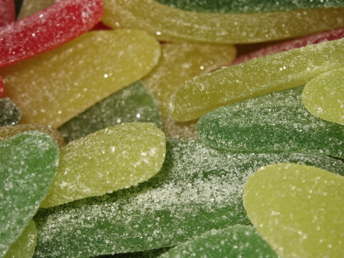<figcaption class="caption">Do you like sour sweets, such as sour worms? The sour taste comes from fumaric acid. Fumaric acid is a natural acid with a sour taste, that is often added to foods.</figcaption></figure><figure>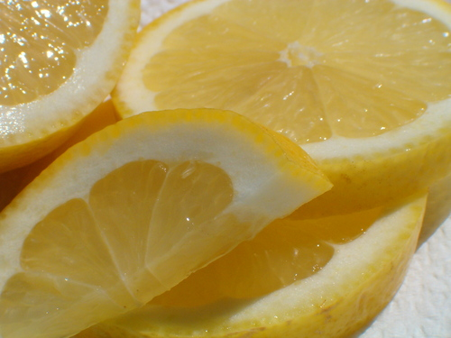<figcaption class="caption">The juice of lemons is rich in ascorbic acid (vitamin C) and citric acid, which makes it taste sour.</figcaption></figure><p/>

<p>All acids taste sour. Does this mean that all acids are safe to taste? Definitely NOT! Next, we will learn which acids should not be tasted under any circumstances.</p>

<p/>
<div class="note  col-md-6" data-type="didyouknow">
<p>The word acid comes from the Latin word <em>acidus</em>, meaning 'sour'.</p>
</div><div class="section"><h4 class="title">Laboratory acids</h4><figure>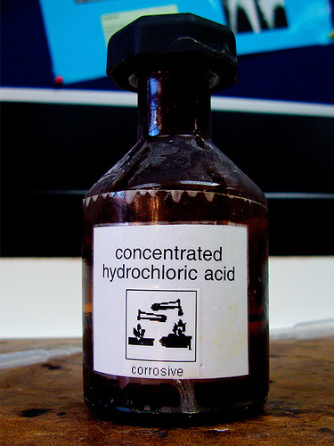<figcaption class="caption">Concentrated hydrochloric acid is very corrosive and dangerous. <a href="http://www.flickr.com/photos/maticulous/2552655853/"> http://www.flickr.com/photos/maticulous/2552655853/ </a></figcaption></figure><p/>

<p>Some acids are very dangerous and must be handled carefully. These acids are <strong>corrosive</strong>. They can cause serious burns on your skin. Scientists always wear protective clothing when handling these acids. It would be very dangerous to taste them. These acids are most often found and used in laboratories and certain industrial processes. We will refer to them as laboratory acids.</p>
<figure>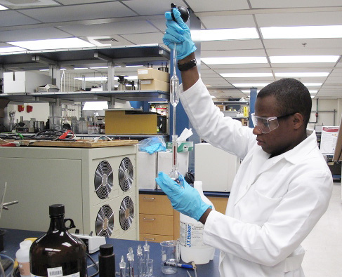<figcaption class="caption">This scientist is handling an acid. Can you see he is wearing protective clothing, gloves and safety glasses? <a href="http://www.flickr.com/photos/rdecom/4968163345/"> http://www.flickr.com/photos/rdecom/4968163345/ </a></figcaption></figure><p/>
<figure>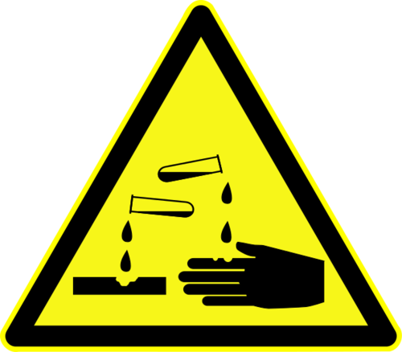<figcaption class="caption">Look out for this label on bottles which contain corrosive substances, such as strong acids.</figcaption></figure><p/>

<p>The following table contains the names and <strong>chemical formulae</strong> of the three most common laboratory acids. Even though you have not learnt how to write chemical formulae yet, we have included them here. You should handle containers with these formulae printed on them with care.</p>

<p/>
<div class="teachers-guide">
<p>Learners will only study chemical formulae in detail in Gr. 9 Matter and Materials, however, this is a good opportunity to introduce them to the concept especially so that learners are able to recognise dangerous chemical substances.</p>
</div>
<p/>
<div class="note  col-md-6" data-type="takenote">
<p>The chemical formula of a substance tells us which elements it contains.</p>
</div>
<p/>
<table><tr><td><p><strong>Name of the acid</strong></p></td><td><p><strong>Formula of the acid</strong></p></td></tr><tr><td><p>hydrochloric acid</p></td><td><p>HCl</p></td></tr><tr><td><p>nitric acid</p></td><td><p>HNO<sub>3</sub></p></td></tr><tr><td><p>sulfuric acid</p></td><td><p>H<sub>2</sub>SO<sub>4</sub></p></td></tr></table><p/>

<p>There are many other laboratory acids that we have not listed. These are only the most common ones.</p>

<p/>
<div class="note  col-md-6" data-type="didyouknow">
<p>You have a laboratory acid inside your body?! Your stomach contains hydrochloric acid (HCl). HCl helps break down the food for digestion. Your stomach has a very mucous lining which helps protect it from the strong acid.</p>
</div>
<p/>

<p>Other acids in the foods we eat are not dangerous. In fact, some are even vital for our health and well-being. Let's now have a look at acids that are safe to handle.</p>

<p/></div><div class="section"><h4 class="title">Natural and household acids</h4>
<p/>

<p>Not all acids are dangerous. One such acid is called ascorbic acid, or vitamin C. Vitamin C helps our immune system. Which foods contain vitamin C? Have a look at the pictures.</p>

<p/>
<div class="note  col-md-6" data-type="didyouknow">
<p>Most people associate oranges with a high vitamin C content, but there are other foods which are much higher in vitamin C. These include chillies, guavas, strawberries, bell peppers, broccoli, kiwi fruits and papaya.</p>
</div>
<p/>
<figure>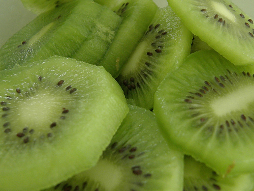<figcaption class="caption">Kiwi fruit. <a href="http://www.flickr.com/photos/dan4th/5317566258/"> http://www.flickr.com/photos/dan4th/5317566258/ </a></figcaption></figure><figure><figcaption class="caption">Strawberries.</figcaption></figure><p/>
<figure>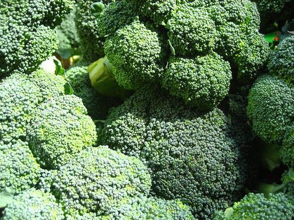<figcaption class="caption">Broccoli. <a href="http://commons.wikimedia.org/wiki/File:Brocolli_%284700583979%29.jpg"> http://commons.wikimedia.org/wiki/File:Brocolli_%284700583979%29.jpg </a></figcaption></figure><figure>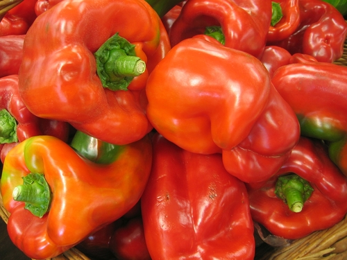<figcaption class="caption">Bell peppers.</figcaption></figure><p/>
<div class="note  col-md-6" data-type="takenote">
<p>If you do not have enough vitamin C in your diet you may develop a number of symptoms: you may become tired easily, bruise easily, develop bleeding gums, dry skin and hair, become moody and lose weight. These are all symptoms of a weakened immune system.</p>
</div>
<p/>

<p>We will call the acids that we find in food natural acids. Many of these natural acids are found in the kitchen. For this reason they are also sometimes called household acids.</p>

<p/>

<p>One very well-known household acid is acetic acid. Vinegar is a mixture of a small amount of acetic acid dissolved in water. So vinegar is a solution of acetic acid in water.</p>
<figure>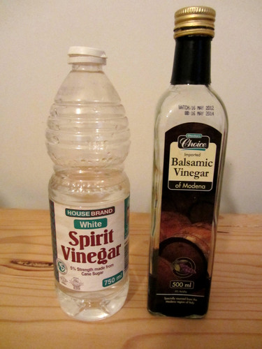<figcaption class="caption">Spirit vinegar and balsamic vinegar.</figcaption></figure><div class="teachers-guide">
<p>This is a good place to briefly revise some of the concepts learnt in Gr. 6 about solutions and mixtures, and to refer back to Chapter 2 about separating mixtures.</p>
</div>
<p/>
<div class="note  col-md-6" data-type="didyouknow">
<p>Formic acid is what gives ants their sting when they bite. 'Formic' comes from the Latin word for ant 'formica'<em>.</em></p>
</div>
<p/>
<div class="activity" data-type="Activity"><h1 class="title">True or false?</h1>
<p/>

<p><strong>INSTRUCTIONS:</strong></p>
<ul data-class="ListBulleted"><li>Let's briefly revise some of the concepts we have learnt so far.</li>
<li>Below are some statements. You need to state whether they are true or false. If they are false, explain why.</li>
</ul><p/>

<p><strong>True or false?</strong></p>
<div class="exercises"><div class="problemset"><div class="entry"><div class="problem">
<p>We can sense three tastes with our tongues. </p><hr/></div><div class="solution">
<p/><p>False, we can sense four tastes, namely salty, sweet, sour and bitter.</p>
</div></div><div class="entry"><div class="problem">
<p>Acids taste sour. </p><hr/></div><div class="solution">
<p/><p>True</p>
</div></div><div class="entry"><div class="problem">
<p>If we want to know if something is an acid, we can just taste it. </p><hr/></div><div class="solution">
<p/><p>False, not all acids are safe to taste, such as laboratory acids.</p>
</div></div><div class="entry"><div class="problem">
<p>All acids are dangerous. </p><hr/></div><div class="solution">
<p/><p>False, there are many household acids which are not dangerous, such as acetic acid and acids in foods.</p>
</div></div><div class="entry"><div class="problem">
<p>Vinegar is a mixture of a small amount of acetic acid dissolved in water. </p><hr/></div><div class="solution">
<p/><p>True.</p>
</div></div><div class="entry"><div class="problem">
<p>Laboratory acids must be handled with care and using protective clothing. </p><hr/></div><div class="solution">
<p/><p>True</p>
</div></div><div class="entry"><div class="problem">
<p>The following symbol means you can wash your hands using this substance.</p>
<figure id="gd-idp729728"></figure><p/><hr/></div><div class="solution">
<p/><p>False. This symbol means that the substance is corrosive, it is a warning.</p>
</div></div><div class="entry"><div class="problem">
<p>Formic acid is commonly referred to as Vitamin C. </p><hr/></div><div class="solution">
<p/><p>False, ascorbic acid is commonly referred to as Vitamin C.</p>
</div></div><div class="entry"><div class="problem">
<p>Oranges are the food which contain the highest amount of ascorbic acid. </p><hr/></div><div class="solution">
<p/><p>False, there are many other foods with higher ascorbic acid (Vitamin C), such as strawberries and chillies.</p>
</div></div></div></div>

<p/>
</div>

<p/>
<div class="note  col-md-6" data-type="didyouknow">
<p>Many of the fizzy drinks that we drink contain carbonic acid.</p>
</div>
<p/>

<p>Do you think that it would be possible for acids to lose their strength? There is one class of compounds that can make acids lose their strength. These compounds are called bases.</p></div></div><div class="section"><h3 class="title" id="toc-id-6">Bases</h3><div class="note  col-md-6" data-type="newwords"><ul data-class="ListBulleted"><li>base</li>
<li>neutral substance</li>
<li>neutralise</li>
<li>alkali</li>
</ul></div>
<p/>

<p>Bases can <strong>neutralise</strong> acids and vice versa. What does it mean to neutralise something? </p><hr/><hr/><div class="teachers-guide">
<p>At this level, learners can think of neutralisation as a process in which something potent (and potentially harmful) is changed into something harmless (or at least less harmful). Later on (in Gr. 9) they will learn the proper scientific definition of neutralisation: "the process in which an acid reacts with a base to form a salt and water". It is important to note that a neutralisation reaction <strong>does not</strong> necessarily result in a neutral solution.</p>
</div>
<p/>
<div class="note  col-md-6" data-type="takenote">
<p>When an acid and a base are mixed together in the<strong>correct ratio</strong>, they will neutralise each other. This means that the solution made up of the acid and the base becomes something that is neither an acid nor a base, but neutral. In the process, both the acid and the base will lose their unique characteristics.</p>
</div>
<p/>

<p>Bases and acids have chemical properties that are the opposite of each other. We can think of bases as the chemical opposite of acids.</p>

<p/>

<p>As with acids, there are some bases that are extremely dangerous. The same hazard symbol that is used to warn people of the dangers of acids, is also used for these bases. Strong bases react corrosively with other materials and can burn your skin. They must be handled carefully and always while wearing appropriate protective clothing, such as lab coats, gloves and safety glasses.</p>
<figure>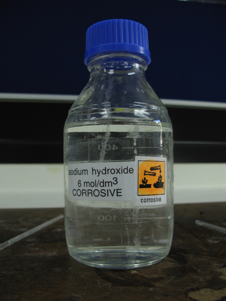<figcaption class="caption">Sodium hydroxide is a strong base used in laboratories. Do you see the yellow corrosive warning symbol? <a href="http://commons.wikimedia.org/wiki/File:Sodium_hydroxide_solution.jpg"> http://commons.wikimedia.org/wiki/File:Sodium_hydroxide_solution.jpg </a></figcaption></figure><p/>

<p>Other bases are mild enough to be used as cleaning materials in and around the home. This does not mean that they are completely harmless. It just means that they have been mixed with other substances so that they are not so corrosive.</p>

<p/>
<div class="activity" data-type="Activity"><h1 class="title">Acids and bases in our homes</h1><div class="teachers-guide">
<p>For this activity, learners must first identify the products in the photograph provided. All of these household products contain bases. The next part of the activity is a demonstration which you can set up beforehand in the front of your classroom. Instructions and materials for the demonstration are supplied here:</p>

<p/>

<p><strong>MATERIALS</strong>:</p>
<ul data-class="ListBulleted"><li>five bowls</li>
<li>water</li>
<li>washing powder</li>
<li>handy andy</li>
<li>bicarbonate of soda or baking powder</li>
<li>lemon juice</li>
<li>vinegar</li>
<li>labels for each bowl showing the product that is in them</li>
<li>a towel for drying hands</li>
</ul><p/>

<p><strong>INSTRUCTIONS</strong>:</p>
<ol data-class="ListEnumerated"><li>Place the bowls in a row on a desk in the front.</li>
<li>Mix each of the bases (washing powder, handy andy, baking powder) in separate bowls with some water.</li>
<li>Pour some lemon juice into another bowl and some vinegar into the last bowl.</li>
<li>Arrange the bowls in a row, alternating between a base and an acid.</li>
<li>Once the learners have filled in the table to identify the products, get them to come up to the front in groups to put their fingers in the bowls to feel the different substances.</li>
<li>They must take note of what they are feeling and should dry their hands between each substance.</li>
<li>After feeling the difference between the acids and bases, the learners can go back to their desk to complete the activity.</li>
</ol><p/>

<p>As an extension, you can also let learners take note of the difference between the dry powder for washing powder and then how it feels when it is mixed with water. Bases which dissolve in water are called alkalis.</p>
</div>
<p/>

<p>All of the products in the picture below contain bases. Which of the products do you recognise? Write their names and what they are used for in the table.</p>

<p/>
<figure>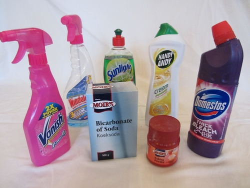<figcaption class="caption">Some household products which are bases.</figcaption></figure><p/>
<div class="teachers-guide">
<p>Many household products (such as certain apple-scented shampoos and dishwashing liquids) contain apple or lemon scents or essences as additives. It has been noted that some of these products may be more acidic than basic. Make sure to test all the products you will be using in the class beforehand, to make sure the bases all react as expected.</p>
</div><div class="exercises"><div class="problemset"><div class="entry"><div class="problem">
<p/>

          <table><tr><td><p><strong>Product</strong></p></td><td><p><strong>What is it used for?</strong></p></td></tr><tr><td><p/></td><td><p/></td></tr><tr><td><p/></td><td><p/></td></tr><tr><td><p/></td><td><p/></td></tr><tr><td><p/></td><td><p/></td></tr><tr><td><p/></td><td><p/></td></tr><tr><td><p/></td><td><p/></td></tr><tr><td><p/></td><td><p/></td></tr></table></div><div class="solution">
<p/><p/>

          <table><tr><td><p><strong>Product</strong></p></td><td><p><strong>What is it used for?</strong></p></td></tr><tr><td><p>Stain remover (Vanish)</p></td><td><p>Removing stains from clothes</p></td></tr><tr><td><p>Windowlene</p></td><td><p>Cleaning windows</p></td></tr><tr><td><p>Handy Andy</p></td><td><p>Cleaning surfaces (stove, bathroom, kitchen tops, etc.)</p></td></tr><tr><td><p>Baking powder</p></td><td><p>Ingredient in baked goods</p></td></tr><tr><td><p>Bicarbonate of soda</p></td><td><p>Ingredient in baked goods, also a mild disinfectant</p></td></tr><tr><td><p>Bleach</p></td><td><p>Disinfecting and removing stains</p></td></tr><tr><td><p>Sunlight liquid</p></td><td><p>Cleaning dishes, cutlery and crockery</p></td></tr></table><p/>
</div></div></div></div>

<p>Next, your teacher will let you come up to feel different substances which are either bases or acids. All of these substances are safe to touch. Take note of how they feel between your fingers and then come back to fill in the table.</p>
<div class="exercises"><div class="problemset"><div class="entry"><div class="problem">
<p/>

          <table><tr><td><p><strong>Substance</strong></p></td><td><p><strong>How did it feel between the fingers?</strong></p></td><td><p><strong>Is it an acid or a base?</strong></p></td></tr><tr><td><p/></td><td><p/></td><td><p/></td></tr><tr><td><p/></td><td><p/></td><td><p/></td></tr><tr><td><p/></td><td><p/></td><td><p/></td></tr><tr><td><p/></td><td><p/></td><td><p/></td></tr><tr><td><p/></td><td><p/></td><td><p/></td></tr></table></div><div class="solution">
<p/><p/>

          <table><tr><td><p><strong>Substance</strong></p></td><td><p><strong>How did it feel between the fingers?</strong></p></td><td><p><strong>Is it an acid or a base?</strong></p></td></tr><tr><td><p>Washing powder</p></td><td><p>Slippery</p></td><td><p>Base</p></td></tr><tr><td><p>Lemon juice</p></td><td><p>Feels slightly rough between the fingers</p></td><td><p>Acid</p></td></tr><tr><td><p>Handy andy/soap</p></td><td><p>Slippery</p></td><td><p>Base</p></td></tr><tr><td><p>Vinegar</p></td><td><p>Leaves a rough feeling on the skin</p></td><td><p>Acid</p></td></tr><tr><td><p>Baking powder</p></td><td><p>Slippery</p></td><td><p>Base</p></td></tr></table><p/>
</div></div></div></div>
<div class="teachers-guide">
<p>The bases will be easy to describe as they mostly feel quite slippery between the fingers. Acids generally leave a "rough" feeling on the skin and are not slippery like bases.</p>
</div>
<p/>

<p><strong>QUESTIONS:</strong></p>
<div class="exercises"><div class="problemset"><div class="entry"><div class="problem">
<p>What can you conclude about how bases feel? </p><hr/></div><div class="solution">
<p/><p>Bases feel slippery.</p>
</div></div><div class="entry"><div class="problem">
<p>What can you conclude about how acids feel? </p><hr/></div><div class="solution">
<p/><p>Generally, acids feel rough on the skin.</p>
</div></div><div class="entry"><div class="problem">
<p>What did your teacher have to do to the dry washing powder before you could feel it in the bowl? Do you know what we call the solution which forms? If so, write it down, otherwise your teacher will help you. </p><hr/><hr/></div><div class="solution">
<p/><p>She/he had to add water to make it slippery. A solution of a base and water is called an alkaline solution.</p>
</div></div><div class="entry"><div class="problem">
<p>Although we have spoken about acids and bases as being chemical opposites, what property do many of them have in common? </p><hr/><hr/></div><div class="solution">
<p/><p>Many acids and bases are dangerous to touch or taste - they are corrosive.</p>
</div></div></div></div>

<p/>
</div>

<p/>
<div class="note  col-md-6" data-type="takenote">
<p>Bases that can dissolve in water are called<strong>alkalis</strong>. For this reason, the terms base and alkali are sometimes considered to have the same meaning. (Words that have the same meaning are called synonyms.)</p>
</div>
<p/>

<p>Finally, there is a class of substances that are neither acids nor bases. They are called <strong>neutral</strong> substances. We will explore them next.</p>

<p/></div><div class="section"><h3 class="title" id="toc-id-7">Neutral substances</h3>
<p/>

<p>We have learnt that when an acid and a base are mixed (in the right amounts), they will neutralise each other. That means that, together, they will change into something that is neither an acid nor a base. So the acid will lose its properties and so will the base. And the new substance that forms from the two substances will be neither an acid nor a base. We call it a neutral substance.</p>

<p/>

<p>Some neutral substances are formed when an acid is mixed with a base and a neutralisation reaction occurs. Other substances are neutral to begin with. They are not the product of a neutralisation reaction. The neutral substances that are the most well known are: water, table salt, sugar solution and cooking oil.</p>
<figure><figcaption class="caption">Cooking oil is a neutral substance.</figcaption></figure><p/>

<p>We have learnt about three classes of substances: acids, bases and neutral substances. But, we cannot tell whether a substance is an acid, base, or a neutral substance, just by looking at it. We know that acids taste sour, but we have also learnt that it is never a good idea to taste chemicals.</p>

<p/>

<p>Let's imagine we have an unknown substance. It is colourless and looks just like water. It is also odourless (that means it has no smell). There are no physical signs to show whether it is acidic, basic, or neutral. How can we tell what it is?</p>

<p/></div></div><div class="section"><h2 class="title" id="toc-id-8">Acid-base indicators</h2>
<p/>
<div class="note  col-md-6" data-type="newwords"><ul data-class="ListBulleted"><li>indicator</li>
<li>litmus</li>
</ul></div>
<p/>

<p>What do the indicators on a car do?</p>
<div class="teachers-guide">
<p>Ask your learners this question to highlight the meaning of the word "indicate", which is to show. When the indicators on a car light up, they <em>show</em> other motorists that the driver of the car intends to turn left or right.</p>
</div>
<p/>
<div class="note  col-md-6" data-type="takenote">
<p>To indicate means to show.</p>
</div>
<p/>

<p>Acids and bases can change the colour of some substances. In the next activity, we are going to investigate a substance that changes colour when we mix it with an acid or a base.</p>

<p/>
<div class="note  col-md-6" data-type="visit">
<p>This website has a list of other household products that will also change colour when mixed with acids or bases. Make sure you ask your parents if you may experiment before you start!<a data-class="ExternalLink" href="http://bit.ly/195o6gF">bit.ly/195o6gF</a></p>
</div>
<p/>
<div class="teachers-guide">
<p>It has been noted that some household indicators that appear on the list above are not very effective, such as tea and beetroot. Some are more sensitive, including curry powder and turmeric. If you explore other indicators with the class, make sure to test a few to determine which ones produce the best results. Here is a table of other naturally occurring indicators which you could use in class:</p>
<figure id="gd-idp7998224">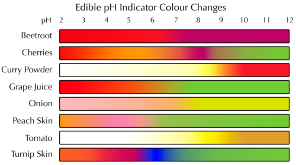</figure><p/>
</div>
<p/>

<p>Have you ever eaten red cabbage? It is not only tasty, but also very healthy. We are going to see how red cabbage juice changes when we mix it with different substances.</p>

<p/>
<div class="note  col-md-6" data-type="visit">
<p>Video on red cabbage and black tea as indicators<a data-class="ExternalLink" href="http://bit.ly/19PBmsJ">bit.ly/19PBmsJ</a></p>
</div>
<p/>
<div class="activity" data-type="Activity"><h1 class="title">Preparing and testing red cabbage juice with acid and base</h1><div class="teachers-guide">
<p>You will need to buy a red cabbage prior to this activity. Red cabbages are available during winter and spring. One cabbage should make enough extract for an entire class of learners. You can prepare the extract in the class, or you could make it ahead of time and simply demonstrate the method (cutting the cabbage, boiling and straining it) to the learners without boiling the cabbage in class.</p>

<p/>

<p>If you are not able to get red cabbage, you can try using some of the other foods listed in the previous table which are also natural indicators. Another example which is easy to use and obtain is black tea.</p>
</div>
<p/>

<p><strong>MATERIALS:</strong></p>
<ul data-class="ListBulleted"><li>one large, red cabbage</li>
<li>pot with water for boiling</li>
<li>hot plate (or stove)</li>
<li>strainer</li>
<li>sharp knife</li>
<li>container for red cabbage juice (ice cream tub or large yoghurt tub will work well)</li>
<li>white plate</li>
<li>vinegar</li>
<li>baking soda solution</li>
</ul><p/>

<p><strong>INSTRUCTIONS:</strong></p>

<p/>

<p><strong>Prepare the cabbage juice:</strong></p>
<ol data-class="ListEnumerated"><li>Cut the cabbage into thin slices and place it in the pot.</li>
</ol><figure id="gd-idp9694992">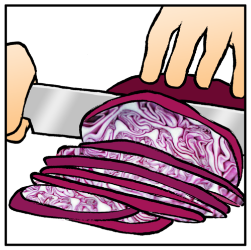</figure><ol data-class="ListEnumerated"><li>Add just enough water to cover the cabbage slices.</li>
<li>Boil it over low heat for approximately 30 minutes, adding water to keep the cabbage covered if necessary.</li>
</ol><figure id="gd-idp7897360">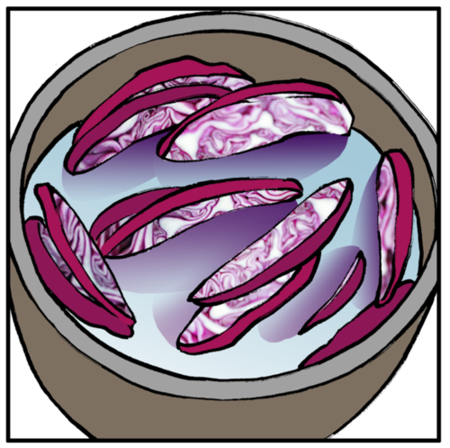</figure><ol data-class="ListEnumerated"><li>Remove the pot from the heat and let it cool completely.</li>
<li>Strain the juice off the cabbage slices into the ice cream tub. The boiled cabbage slices can be eaten (or placed in the compost).</li>
</ol><figure id="gd-idp13609472">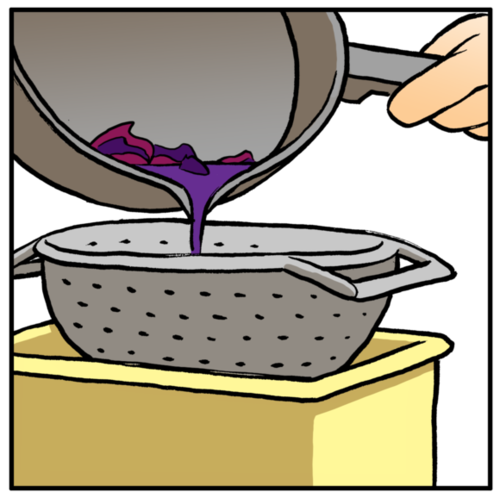</figure><ol data-class="ListEnumerated"><li>If kept in the fridge the red cabbage juice will last about 3 days.</li>
</ol><p/>

<p><strong>Test the cabbage juice indicator</strong></p>
<ol data-class="ListEnumerated"><li>Carefully place three large drops of the cabbage juice on a smooth, white surface (a white plate or tile will work well).</li>
<li>Pour a few drops of vinegar into one of the drops of cabbage juice. What do you see? <hr/></li>
<li>Pour a few drops of baking soda solution into one of the remaining drops of cabbage juice. What do you see? <hr/></li>
</ol><figure>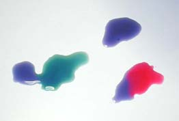<figcaption class="caption">Red cabbage juice mixed with baking soda (left) and with vinegar (right). The blue drop at the top is the unmixed juice.</figcaption></figure><p/>
</div>

<p/>
<div class="note  col-md-6" data-type="visit">
<p>These two videos are both demonstrations of the cabbage juice indicator experiment you just completed<a data-class="ExternalLink" href="http://bit.ly/18cZjX5">bit.ly/18cZjX5</a> and <a data-class="ExternalLink" href="http://bit.ly/15Qjigh">bit.ly/15Qjigh</a>.</p>
</div>
<p/>
<div class="teachers-guide">
<p>These demonstration videos extract the red cabbage juice by blending it with some water in a blender instead of boiling it. Both methods are equally effective in extracting the juice from the cabbage leaves.</p>
</div>
<p/>

<p>In the next activity we are going to preserve the red cabbage juice by absorbing it on some filter paper, and drying it, so that we can use it later.</p>

<p/>
<div class="activity" data-type="Activity"><h1 class="title">Making red cabbage indicator paper</h1><div class="teachers-guide">
<p>If time permits, you can make these indicator strips in class with your learners using the cabbage juice from the previous experiment. If you do not have time, do this yourself outside of class and then just go through the steps below explaining to your learners what you did. If you do not have time to do it in class, you can also encourage learners to do it at home with their parents if they have capacity and resources.</p>
</div>
<p/>

<p><strong>MATERIALS:</strong></p>
<ul data-class="ListBulleted"><li>pieces of absorbent paper</li>
<li>red cabbage juice from the previous activity in a container</li>
<li>scissors</li>
<li>container</li>
</ul><p/>
<div class="teachers-guide">
<p>Filter paper is best, or paper used for painting with watercolours (available from stationery or art supply shops); coffee filters or even paper towel would also work. The cabbage juice should not be too dilute; you can concentrate it by heating it over low heat for 20 minutes and allowing it to cool.</p>
</div>
<p><strong>INSTRUCTIONS:</strong></p>
<ol data-class="ListEnumerated"><li>
<p>Place the absorbent paper in the cabbage juice.</p>

	    <figure id="gd-idp5492560"></figure></li>
<li>After 30 minutes, remove the paper and leave it in a warm place to dry.</li>
</ol><div class="teachers-guide">
<p>You can also dry the paper with a hair dryer, but do not leave it in direct sunlight.</p>
</div><ol data-class="ListEnumerated"><li>When the paper has completely dried, cut it into strips (approximately 1 cm wide). You can keep the strips for a long time if you store them in a dry place.</li>
</ol><p>We will use the red cabbage paper strips later, as part of an investigation.</p>

<p/>
</div>

<p>Some other substances also change colour when an acid or a base is added to them. By changing their colour, they show that they have reacted with an acid or a base. That is why we call them <strong>acid-base indicators</strong>.</p>

<p>The most well-known acid-base indicator is a substance called <strong>litmus.</strong></p>

<p/>
<figure><figcaption class="caption">Blue and red litmus paper.</figcaption></figure><p/>
<div class="note  col-md-6" data-type="didyouknow">
<p>Litmus is a coloured substance that comes from the pigments of a living organism called <em>lichen</em>. Pigments are coloured substances found in nature.</p>
</div>
<p/>
<figure>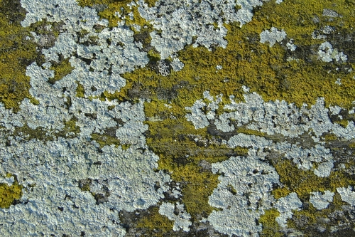<figcaption class="caption">Litmus comes from pigments in the lichen which are found growing in many different places, mostly on rocks.</figcaption></figure><p/>

<p>Litmus solution is most commonly soaked into paper, the paper is then dried and cut into strips we then call "litmus paper". It is just like the red cabbage paper we made earlier. Litmus paper is available in two colours: blue and red.</p>

<p/>

<p>How does litmus paper indicate whether a substance is an acid or a base? In the next activity, we will investigate how litmus responds to some household acids and bases.</p>

<p/>
<div class="note  col-md-6" data-type="visit">
<p>Colourful chemistry with acids and bases using household products (video)<a data-class="ExternalLink" href="http://bit.ly/15QjCfd">bit.ly/15QjCfd</a></p>
</div>
<p/>
<div class="activity" data-type="Investigation"><h1 class="title">How does litmus respond to acids and bases?</h1><div class="teachers-guide">
<p>CAPS suggests that you also test various beverages to see whether they are acids, bases or neutrals. A suggestion is to do this investigation presented here first where learners first determine how litmus responds to acids and bases, and then if you have time as an extension, get learners to test various drinks, such as water, Ceylon tea, rooibos tea, orange juice, milk, coffee and any fizzy drink to see whether they are acids, bases or neutrals.</p>
</div>
<p/>

<p><strong>AIM:</strong> To determine how litmus responds to some household acids and bases.</p>

<p/>

<p><strong>HYPOTHESIS:</strong> What is your hypothesis for this investigation? </p><hr/><hr/><div class="teachers-guide">
<p>Learners may not yet know how litmus reacts to acids and bases, so they may have to come back to propose a new hypothesis when they are writing their conclusions. They should not be encouraged to come back to this space, cross out the hypothesis and write a new one which they know to be true. This is an important concept in science investigations - a hypothesis is a proposed explanation, which needs to be <strong>tested</strong> further using the scientific method. One can then verify whether the hypothesis was true (and it is accepted) or it is false (and it is rejected) and you come up with a new proposed hypothesis.</p>
</div>
<p/>

<p><strong>MATERIALS AND APPARATUS:</strong></p>
<div class="teachers-guide">
<p>It would be advisable to label the containers to prevent learners from confusing the substances.</p>
</div><ul data-class="ListBulleted"><li>small containers (test tubes or yoghurt tubs) filled with the following substances:
<ul data-class="ListBulleted"><li>water</li>
<li>soda water</li>
<li>vinegar</li>
<li>lemon juice</li>
<li>sugar water (1 tablespoon dissolved in a cup of water)</li>
<li>baking soda (1 tablespoon dissolved in a cup of water)</li>
<li>Handy Andy (1 tablespoon dissolved in a cup of water)</li>
<li>aspirin (Disprin) (1 tablet in 2 tablespoons of water)</li>
<li>dishwashing liquid (1 teaspoon dissolved in a cup of water)</li>
<li>any other substances commonly used at home that are not dangerous</li>
</ul></li>
<li>litmus paper (blue and red)</li>
<li>glass or plastic rods (plastic teaspoons will also work well).</li>
</ul><p/>

<p><strong>METHOD:</strong></p>
<ol data-class="ListEnumerated"><li>Cut a small piece (1 cm long) of blue and red litmus for each substance that you will be testing.</li>
<li>Use the plastic teaspoon or rod to place just 1 drop of water on the blue litmus. Do the same with a piece of red litmus.</li>
<li>Did the blue litmus change colour? Did the red litmus change colour? Write the new colours in your table, in the appropriate place.</li>
<li>Repeat the procedure to test all the substances you have been given. You must rinse the teaspoon or rod with water in between substances.</li>
<li>Save all your test substances, because you will need them for another investigation later.</li>
</ol><p/>

<p><strong>RESULTS AND OBSERVATIONS:</strong></p>

<p/>

<p>Record your observations in the table. If you did not use some of these substances, cross them out and write headings for your substances in the empty rows.</p>

<p/>
<table><tr><td><p><strong>Substance</strong></p></td><td><p><strong>Colour with blue litmus</strong></p></td><td><p><strong>Colour with red litmus</strong></p></td></tr><tr><td><p>Water</p></td><td><p/></td><td><p/></td></tr><tr><td><p>Soda water</p></td><td><p/></td><td><p/></td></tr><tr><td><p>Vinegar</p></td><td><p/></td><td><p/></td></tr><tr><td><p>Lemon juice</p></td><td><p/></td><td><p/></td></tr><tr><td><p>Sugar water</p></td><td><p/></td><td><p/></td></tr><tr><td><p>Baking soda</p></td><td><p/></td><td><p/></td></tr><tr><td><p>Handy Andy</p></td><td><p/></td><td><p/></td></tr><tr><td><p>Aspirin</p></td><td><p/></td><td><p/></td></tr><tr><td><p>Dishwashing liquid</p></td><td><p/></td><td><p/></td></tr><tr><td><p/></td><td><p/></td><td><p/></td></tr><tr><td><p/></td><td><p/></td><td><p/></td></tr><tr><td><p/></td><td><p/></td><td><p/></td></tr></table><p/>

<p><strong>ANALYSIS:</strong></p>

<p/>

<p>Let us now have a look at our observations to see what we can conclude.</p>

<p/>
<div class="exercises"><div class="problemset"><div class="entry"><div class="problem">
<p>How does the litmus paper indicate when a substance is an acid? </p><hr/><hr/></div><div class="solution">
<p/><p>In an acid, the blue litmus changed to red and the red litmus remained red.</p>
</div></div><div class="entry"><div class="problem">
<p>Which of the substances you tested are acids? </p><hr/><hr/></div><div class="solution">
<p/><p>Depending on the substances you use, but according to those listed here, the acids are: soda water, vinegar, lemon juice and aspirin.</p>
</div></div><div class="entry"><div class="problem">
<p>How does the litmus paper indicate when a substance is a base? </p><hr/><hr/></div><div class="solution">
<p/><p>In a base, blue litmus remains blue and red litmus changes blue.</p>
</div></div><div class="entry"><div class="problem">
<p>Which of the substances you tested are bases? </p><hr/><hr/></div><div class="solution">
<p/><p>Depending on the substances you use, but according to those listed here, the bases are: baking soda, handy andy, dishwashing liquid.</p>
</div></div><div class="entry"><div class="problem">
<p>How would you describe a neutral substance? </p><hr/><hr/></div><div class="solution">
<p/><p>Learner-dependent answer.</p>
</div></div><div class="entry"><div class="problem">
<p>How does the litmus paper indicate when a substance is neutral? </p><hr/></div><div class="solution">
<p/><p>Neither the red or the blue litmus paper will change colour when a substance is neutral.</p>
</div></div><div class="entry"><div class="problem">
<p>Which of the substances you tested were neutral? </p><hr/></div><div class="solution">
<p/><p>Water and sugar solution.</p>
</div></div><div class="entry"><div class="problem">
<p>Why do you think you had to rinse the glass rod or teaspoon in between testing each substance? </p><hr/><hr/></div><div class="solution">
<p/><p>You need to do this to avoid contamination and mixing of the substances otherwise, for example, there might be some acid left over when testing a base which would change the litmus paper resulting in an incorrect result for the base.</p>
</div></div></div></div>

<p/>

<p><strong>CONCLUSION:</strong></p>

<p>Write a conclusion based on your results in response to the initial aim for this investigation. </p><hr/><hr/><div class="teachers-guide">
<p>A conclusion must respond to the aim and hypothesis for the investigation. In this case the aim was to determine how litmus paper responds to some household bases and acids. Therefore a conclusion is: In response to some household acids and bases, red litmus paper turns blue in bases and remains red in acids, and blue litmus paper turns red in acids and remains blue in bases. Both red and blue litmus paper will remain red or blue, respectively, in the presence of neutral substances. Learners can see whether they reject or accept their hypotheses.</p>
</div>
<p/>

<p><strong>Extension</strong>: If you have time in class with your teacher, use your knowledge of how litmus responds to acids and bases to test some of the beverages that you drink every day. You can use litmus paper to indicate whether beverages such as ceylon tea, rooibos tea, orange juice, milk, coffee and fizzy drinks are acids, bases or neutrals. If you do so, record your findings here: <br/><br/><br/><br/><br/></p>

<p/>
</div>

<p/>
<div class="teachers-guide">
<p>The first five minutes of this video (<a data-class="ExternalLink" href="http://bit.ly/17zszF4">bit.ly/17zszF4</a>) contains a very clear demonstration of acids and bases using a universal indicator. The entire video is more than an hour long and touches on a range of chemical experiments and demonstrations. The demonstrations are very well designed and executed and the video can be used as a very useful tool to illustrate many concepts of chemistry in the classroom, though only the first part is relevant to this chapter.</p>
</div>
<p/>

<p>We can say the following about litmus:</p>
<ul data-class="ListBulleted"><li>Blue litmus is used to test for acids:
<ul data-class="ListBulleted"><li>acids turn blue litmus red.</li>
<li>Bases and neutral substances do not change the colour of blue litmus.</li>
</ul></li>
<li>Red litmus is used to test for bases
<ul data-class="ListBulleted"><li>bases turn red litmus blue.</li>
<li>Acids and neutral substances do not change the colour of red litmus.</li>
</ul></li>
</ul><p/>

<p>What about the red cabbage paper that we made earlier? Can these paper strips be used to tell if something is an acid or a base? Let's find out.</p>

<p/>
<div class="activity" data-type="Investigation"><h1 class="title">Is red cabbage paper suitable as acid-base indicator?</h1><div class="teachers-guide">
<p>This is an <strong>optional, extension</strong> activity.</p>
</div>
<p/>

<p><strong>AIM:</strong> To determine whether red cabbage is a suitable acid-base indicator.</p>

<p/>

<p><strong>MATERIALS AND APPARATUS:</strong></p>
<div class="teachers-guide">
<p>Learners can use the saved substances from the litmus investigation they did earlier. Top up the solutions if necessary.</p>
</div><ul data-class="ListBulleted"><li>small containers with the same substances as in the previous investigation</li>
<li>red cabbage paper strips</li>
<li>glass or plastic rods</li>
</ul><p/>

<p><strong>METHOD:</strong></p>
<ol data-class="ListEnumerated"><li>Use a small strip (2 cm long) of red cabbage paper for each substance that you will be testing.</li>
<li>Dip a fresh piece of paper into each of the test solutions. Does the paper change colour? Write the colour of the paper with each substance in your table in the appropriate place.</li>
</ol><p/>

<p><strong>RESULTS AND OBSERVATIONS:</strong></p>

<p/>

<p>Record your observations in the table.</p>
<table><tr><td><p><strong>Substance</strong></p></td><td><p><strong>Colour with red cabbage paper</strong></p></td></tr><tr><td><p>Water</p></td><td><p/></td></tr><tr><td><p>Soda water</p></td><td><p/></td></tr><tr><td><p>Vinegar</p></td><td><p/></td></tr><tr><td><p>Lemon juice</p></td><td><p/></td></tr><tr><td><p>Sugar water</p></td><td><p/></td></tr><tr><td><p>Baking soda</p></td><td><p/></td></tr><tr><td><p>Handy Andy</p></td><td><p/></td></tr><tr><td><p>Aspirin</p></td><td><p/></td></tr><tr><td><p>Dishwashing liquid</p></td><td><p/></td></tr><tr><td><p/></td><td><p/></td></tr><tr><td><p/></td><td><p/></td></tr><tr><td><p/></td><td><p/></td></tr></table><p/>

<p><strong>QUESTIONS:</strong></p>
<div class="exercises"><div class="problemset"><div class="entry"><div class="problem">
<p>Which of the test substances are acids? (Check the results from the litmus investigation that you did earlier.) </p><hr/><hr/></div><div class="solution">
<p/><p>Learner-dependent answer.</p>
</div></div><div class="entry"><div class="problem">
<p>What colour did the red cabbage paper turn in the test substances that were acids? </p><hr/></div><div class="solution">
<p/><p>The red cabbage paper should turn a red-pink colour in an acid.</p>
</div></div><div class="entry"><div class="problem">
<p>Which of the test substances are bases? (Check the results from the litmus investigation that you did earlier.) </p><hr/><hr/></div><div class="solution">
<p/><p>Learner-dependent answer.</p>
</div></div><div class="entry"><div class="problem">
<p>What colour did the red cabbage paper turn in the test substances that were bases? </p><hr/></div><div class="solution">
<p/><p>The red cabbage paper should turn a blue-green colour in a base.</p>
</div></div><div class="entry"><div class="problem">
<p>Did the red cabbage paper change colour with all the substances? If there were some substances that did not change the colour of the paper, write their names below. </p><hr/></div><div class="solution">
<p/><p>Learner-dependent answer.</p>
</div></div><div class="entry"><div class="problem">
<p>Are these substances acidic, basic or neutral (also check your litmus test results)? </p><hr/></div><div class="solution">
<p/><p>Learner-dependent answer.</p>
</div></div><div class="entry"><div class="problem">
<p>Do you think red cabbage paper makes a good acid-base indicator? Why do you say so? </p><hr/><hr/></div><div class="solution">
<p/><p>Learner-dependent answer. They should note that a good indicator is something which can tell you if it is an acid or a base, in that the same paper turns different colours whether in an acid or a base.</p>
</div></div></div></div>

<p/>
</div>

<p/></div><div class="section"><h2 class="title" id="toc-id-9">Summary</h2>
<p/>
<div class="note  col-md-10" data-type="keyconcepts"><ul data-class="ListBulleted"><li>Our tongues can sense 4 different flavours namely, sweet, salty, sour and bitter.</li>
<li>Our sense of taste protects us from eating foods that are harmful and stimulates us to eat foods that are nutritious and energy-rich.</li>
<li>Acids and bases are chemical opposites of each other.</li>
<li>Though it is not a good idea to taste chemicals, acids have a sour taste and bases taste bitter.</li>
<li>When they are in solution with water, acids feel rough and bases feel slippery.</li>
<li>Some acids and bases are present in foods and in household items. These are relatively safe to handle. Others are often very corrosive and should only be handled when you are wearing protective clothing.</li>
<li>Substances which are neither acidic nor basic, are called neutral substances.</li>
<li>When an acid is mixed with a base in the right quantities, they neutralise each other. That means they lose their power.</li>
<li>Some substances change colour when they react with an acid or a base. These substances are called acid-base indicators. One household example of an acid-base indicator is red cabbage juice.</li>
<li>Litmus is the best known of all acid-base indicators. It does not change colour in the presence of a neutral substance, but responds to acids and bases in the following way:
<ul data-class="ListBulleted"><li>litmus is red in the presence of an acid; and</li>
<li>litmus is blue in the presence of base.</li>
</ul></li>
</ul></div>
<p/>

<p><strong>Concept map</strong></p>

<p/>

<p>The human tongue can taste 4 main different tastes. What are these? Fill them in the spaces below. You also need to complete the section of the concept map about indicators. Can you work out how to do this? You need to fill in the colour that litmus turns (or remains) in each either an acid or a base (or neutral).</p>
<figure id="gd-idp3586288">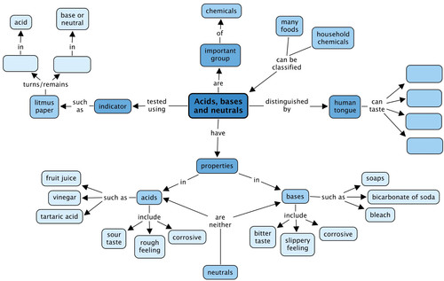</figure><p/>

<p/>

<p/>

<p/>

<p/>

<p/>

<p/>

<p/>

<p/>

<p/>

<p/>

<p/>

<p/>

<p/>

<p/>

<p/>

<p/>

<p/>

<p/>
<div class="teachers-guide">
<p>Teacher's version.</p>
<figure id="gd-idp10741216">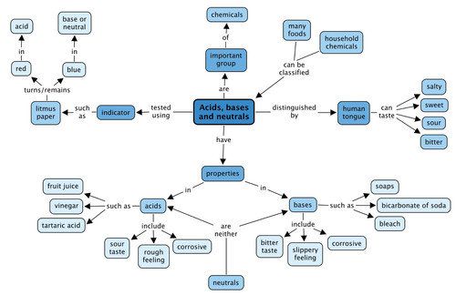</figure></div></div><div class="activity" data-type="Revision"><h1 class="title">Revision Questions</h1><div class="exercises"><div class="problemset"><div class="entry"><div class="problem">
<p>The box below is filled with ideas relating to acids and bases.</p>

	    
<p>You must sort the ideas into two columns in the table. One column is labelled 'Acids' and the other is labelled 'Bases'. Write each idea inside the correct column. If an idea fits into both columns, you must write it in both. [16 marks]</p>

        <table><tr><td><p><strong>Ideas</strong></p>

                  <ul data-class="ListBulleted"><li>Sour taste</li>
<li>Bitter taste</li>
<li>Tartaric acid</li>
<li>Bicarbonate of soda</li>
<li>Feels slippery</li>
<li>Feels rough</li>
<li>Vinegar</li>
<li>Soaps</li>
<li>Lemon Juice</li>
<li>Citric acid</li>
<li>Formic acid</li>
<li>Bleach</li>
<li>Turns red litmus blue</li>
<li>Turns blue litmus red</li>
<li>Corrosive</li>
</ul></td></tr></table><p/>

        <table><tr><td><p><strong>Acids</strong></p></td><td><p><strong>Bases</strong></p></td></tr><tr><td><p/></td><td><p/>

                  
<p/>

                  
<p/>

                  
<p/>

                  
<p/>

                  
<p/>

                  
<p/>

                  
<p/>

                  
<p/>

                  
<p/>

                  
<p/>

                  
<p/>

                  
<p/></td></tr></table></div><div class="solution">
<p/><p/>

        <table><tr><td><p><strong>Acids</strong></p></td><td><p><strong>Bases</strong></p></td></tr><tr><td><p>Sour taste</p>

                  
<p>Tartaric acid</p>

                  
<p>Feels rough</p>

                  
<p>Vinegar</p>

                  
<p>Lemon juice</p>

                  
<p>Citric acid</p>

                  
<p>Formic acid</p>

                  
<p>Turns blue litmus red</p>

                  
<p>Corrosive</p></td><td><p>Bitter taste</p>

                  
<p>Bicarbonate of soda</p>

                  
<p>Soaps</p>

                  
<p>Feels slippery</p>

                  
<p>Bleach</p>

                  
<p>Turns red litmus blue</p>

                  
<p>Corrosive</p></td></tr></table><p/>
</div></div></div></div>
<div class="teachers-guide">
<p>To mark this question, the first 9 items in the acids column should be marked, and the first 7 in the bases column. This is to discourage learners simply putting the whole list into both columns.</p>
</div><ol data-class="ListEnumerated"><li>
<p>Here is another box; this one is filled with words. You must use the words to complete the sentences that follow. Write out the sentences in full. Each word can be used only once. [11 marks]</p>

	    <table><tr><td><p><strong>Words</strong></p>

                  <ul data-class="ListBulleted"><li>Indicator</li>
<li>Sour</li>
<li>Red cabbage</li>
<li>Bitter</li>
<li>Poisonous</li>
<li>Corrosive</li>
<li>Neutralise</li>
<li>Sweet</li>
<li>Neutral</li>
<li>Litmus</li>
<li>Salty</li>
</ul></td></tr></table></li>
</ol><p/>
<div class="exercises"><div class="problemset"><div class="entry"><div class="problem">
<p>The most well-known of all acid-base indicators is called _____ .</p><hr/></div><div class="solution">
<p/><p>The most well-known of all acid-base indicators is called <u>litmus</u>.</p>
</div></div><div class="entry"><div class="problem">
<p>A substance that can eat away at other substances is called _____ </p><hr/></div><div class="solution">
<p/><p>A substance that can eat away at other substances is called <u>corrosive.</u></p>
</div></div><div class="entry"><div class="problem">
<p>Foods that are _____ often taste bitter. </p><hr/></div><div class="solution">
<p/><p>Foods that are <u>poisonous</u> often taste bitter.</p>
</div></div><div class="entry"><div class="problem">
<p>Some scientists believe the human tongue can taste 4 flavours. These flavours are: _____, _____ ,_____, and_____.</p><hr/><hr/></div><div class="solution">
<p/><p>Some scientists believe the human tongue can taste four basic flavours. These flavours are: <u>salty</u>, <u>sweet</u>, <u>bitter</u> and <u>sour</u> (in any order).</p>
</div></div><div class="entry"><div class="problem">
<p>An acid-base _____ is a substance that changes colour when it reacts with an acid or a base. </p><hr/><hr/></div><div class="solution">
<p/><p>An acid-base <u>indicator</u> is a substance that changes colour when it reacts with an acid or a base.</p>
</div></div><div class="entry"><div class="problem">
<p>_____ substances are neither acids nor bases. </p><hr/></div><div class="solution">
<p/><p><u>Neutral</u> substances are neither acids nor bases.</p>
</div></div><div class="entry"><div class="problem">
<p>An acid will _____ a base (and vice versa). </p><hr/></div><div class="solution">
<p/><p>An acid will <u>neutralise</u> a base (and vice versa).</p>
</div></div><div class="entry"><div class="problem">
<p>The juice of the _____ makes a very good acid-base indicator. </p><hr/><hr/></div><div class="solution">
<p/><p>The juice of the <u>red cabbage</u> makes a very good acid-base indicator.</p>
</div></div></div></div>

<p/>
<div class="exercises"><div class="problemset"><div class="entry"><div class="problem">
<p>Give an example of a strong acid and a strong base, commonly used in the laboratory. [2 marks] </p><hr/></div><div class="solution">
<p/><p>Strong acids include hydrochloric acid, sulfuric acid, and a strong base is sodium hydroxide.</p>
</div></div></div></div>
<ol data-class="ListEnumerated"><li>Write one or two sentences to explain what is meant by the term <em>neutralise</em>. [2 marks] <hr/><hr/><hr/><hr/></li>
</ol><p>Learner's answer should contain at least 2 of the following ideas:</p>
<ul data-class="ListBulleted"><li>When an acid reacts with a base, the acid and the base will neutralise each other.</li>
<li>That means they will both lose their strength/potency.</li>
<li>The acid will not be an acid anymore, and the base will not be a base anymore.</li>
<li>They will combine to form a neutral substance.</li>
</ul><p/>
<ol data-class="ListEnumerated"><li>Write a short paragraph to explain how laboratory acids should be handled. Your paragraph should contain the following words: corrosive; taste; clothes. [3 marks] <hr/><hr/><hr/><hr/><hr/></li>
</ol><p>Learner's answer should contain at least the following ideas:</p>
<ul data-class="ListBulleted"><li>Laboratory acids should be handled very carefully because they are corrosive.</li>
<li>Laboratory acids should never be tasted.</li>
<li>You should protect yourself by wearing protective clothes, safety goggles and gloves when handling these acids.</li>
</ul><p/>
<div class="exercises"><div class="problemset"><div class="entry"><div class="problem">
<p>Would all acids burn your tongue or is it OK to taste some acids? Explain your answer. [2 marks] </p><hr/><hr/></div><div class="solution">
<p/><p>Some household acids can be tasted. Some household acids are in our food. Laboratory acids should never be tasted. (optional)</p>
</div></div><div class="entry"><div class="problem">
<p>Give 2 examples of acids that are safe to taste. [1 mark] </p><hr/></div><div class="solution">
<p/><p>Examples of acids that are safe to taste are: vinegar, lemon juice, ascorbic acid (vitamin C), citric acid (any other acceptable examples; learner should name 2).</p>
</div></div><div class="entry"><div class="problem">
<p>How you would be able to recognise an acid when you taste it? [1 mark] </p><hr/></div><div class="solution">
<p/><p>We recognise them as acids by their taste; acids have a sour taste.</p>
</div></div></div></div>
<ol data-class="ListEnumerated"><li>How does our sense of taste warn us when food is not good to eat? [2 marks] <hr/><hr/><hr/><hr/></li>
</ol><p>Learner's answer should contain at least 2 of the following ideas:</p>
<ul data-class="ListBulleted"><li>Most people don't like bitter food; that is because poisonous substances often have a bitter taste.</li>
<li>When food tastes sour, it may be a sign that the food has spoiled.</li>
<li>When food tastes strange (different from the way we remember it to taste) it may be a warning that the food has spoiled.</li>
</ul><p/>
<ol data-class="ListEnumerated"><li>Have you heard of acid rain before? Read the following information and study the diagram. Then answer the questions that follow.</li>
</ol><p/>
<figure id="gd-idp5765920">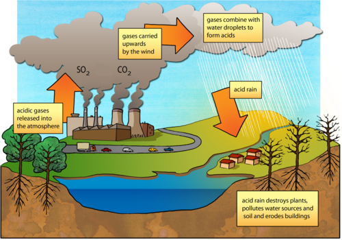</figure><p/>
<div class="exercises"><div class="problemset"><div class="entry"><div class="problem">
<p>Which two gases are mentioned in the text and on the diagram which contribute to forming acid rain? [2 marks] </p><hr/></div><div class="solution">
<p/><p>They are sulfur dioxide and carbon dioxide.</p>
</div></div><div class="entry"><div class="problem">
<p>Where do these gases come from? [2 mark] </p><hr/><hr/></div><div class="solution">
<p/><p>They come from factories, power stations and car exhausts.</p>
</div></div></div></div>
<ol data-class="ListEnumerated"><li>The gases then combine with water droplets in the atmosphere to make acids. What are some of the environmental impacts of acid rain? Study the diagram for some clues. [3 marks] <hr/><hr/><hr/></li>
</ol><p>The impacts include:</p>
<ul data-class="ListBulleted"><li>damage of plant life, both wilderness areas and also crops, depending on where the rain falls</li>
<li>the rain goes into soil, polluting it and making it more acidic</li>
<li>the rain can fall into various water sources and pollutes it.</li>
</ul><p/>
<div class="exercises"><div class="problemset"><div class="entry"><div class="problem">
<p>Acid rain can also damage buildings as it 'eats away' the stone. What property of acids allow it to do this? [1 mark] </p><hr/></div><div class="solution">
<p/><p>Acids are corrosive and so they can corrode surfaces over time.</p>
</div></div></div></div>

<p/>

<p>Total [48 marks]</p>

<p/>

<p/>
</div></div>
      </div></div>